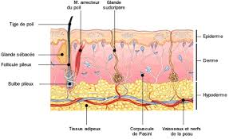

Les plaies chroniques : l'escarre
Definition
Une escarre est une necrose tissulaire consecutive a une ischemie par compression arteriolaire prolonge entre deux plans durs et qui evolue par etape.
Cadre legislatif
Prevention et surveillance relevant du rele propre : art. R.4311-5 decret 2004-802 du 29/07/2004.
Traitement relevant d'une prescription medicale : art. R.4311-7 decret 2004-802 du 29/07/2004.
Les differents stades de destruction et de reconstruction
| Les stades de destruction de l'escarre |
| Stade 0 |
absence de rougeur |
| Stade 1 |
erytheme reversible |
| Stade 2 |
erytheme persistant, phlyctene, desepidermisation |
| Stade 3 |
necrose : plaque noire seche puis suintante |
| Stade 4 |
ulceration : decollement de la plaque noire, necrose ouverte, visualisation de l'os |
| Stades de reconstruction de l'escarre |
| Stade 0(noir) |
necrose |
|
| Stade 1(jaune) |
detersion : elimination des tissus |
|
| Stade 2(rouge) |
bourgeonnement, retrecissement des bords de l'escarre |
|
| Stade 3(rose) |
epidermisation |
|
Processus physiopathologique
L’escarre est du a une ischemie provoque par la compression de la microcirculation qui est formee par des arterioles et veinules. Cette ischemie entraene une necrose des tissus.
Aux niveau des arterioles on observe une diminution du flux sanguin et donc de l’apport en oxygene (hypoxie) et diminution des apports des elements nutritifs.
Aux niveaux des veinules on observe une diminution du flux sanguin ce qui entraene une accumulation des metabolique toxique : CO2 et produits de degradation des matieres organiques.

Facteurs favorisant l'apparition des escarres
L’escarre est un effet de complication de l’alitement et de l’immobilisation prolongee.
Facteurs extrinseques
Les facteurs extrinseques sont lies a l’environnement materiel et personnel : ce sera la compression prolongee sur les memes points d’appuis, le cisaillement, le frottement ou la friction.
Ces effets sont dus au ramollissement de la peau par la maceration induite soit par la transpiration, les souillures, l’absence de protection sur les fauteuils, la presence de materiels : sonde, vetements.
Facteurs lies a l’etat general
Les facteurs de l’etat general sont :
L’ege : les personnes egees ont une diminution de la masse musculaire.
La cachexie : maigreur importante.
L’obesite.
La deshydratation.
La denutrition.
L’hyperthermie : toute elevation de 3e au-dessus de 37e entraene une diminution de 50% de la resistance des tissus.
L’incontinence.
Facteurs intrinseques
Les facteurs intrinseques sont lies aux pathologies que presentent les patients.
Abolition des mouvements trophiques de sauvegarde : coma, paralysies.
Troubles circulatoires.
Hypotension.
Troubles metaboliques : hypercholesterolemie, diabete.
Troubles de l’oxygenation.
Pathologies au stade terminal.
Pathologies suscitant un alitement ou immobilisation prolongee.
Prevention des escarres
Materiel
Huile de massage type huile d'amande douce.
Matelas anti-escarres.
Coussins, boudins.
Realisation du soin
Changer de position toutes les 3 a 4 heures en repartissant au maximum les points d'appuis.
Stimuler la circulation en realisant des massages doux avec des corps gras : effleurage des points d'appuis par des mouvements circulaires sans appuyer.
Installer le patient sur un matelas anti-escarre : matelas a fibres, a mousses.
Installer des coussins et boudins pour diminuer les points de pressions.
Effectuer des changes frequents pour eviter la maceration et maintenir l'hygiene cutanee.
Favoriser l'hydratation et une alimentation saine et adaptee.
Traitements des escarres
Regles generales pour tout escarre.
Soins pour un erytheme persistant.
Soins pour une phlyctene.
Soins pour une desepidermisation.
Soins pour une necrose.
Soins pour une plaie fibrineuse non exsudative.
Soins pour une plaie fibrineuse exsudative.
Soins pour une plaie bourgeonnante.
Soins pour une epidermisation.
Soins pour une plaie hemorragique.
Soins pour une plaie infectee.
Soins pour une plaie odorante.
Materiel
Gants non steriles a usage unique.
Serum physiologique isotonique (ne pas utiliser d'eau sterile car douloureux).
Compresses steriles.
Bistouri sterile.
Protection absorbante a usage unique.
- Pansements en fonction de la clinique de l'escarre et de leurs proprietes :
| Les pansements |
| Types |
Proprietes |
| Hydrogel |
- detersion
- hydrate les tissus et les plaies seches (teneur en eau > 90%)
- absorbe les debris necrotiques et fibrineux
|
| Hydrocolloede |
- favorise la cicatrisation
- maintien un milieu humide : se transforme au contact des exsudats en un gel cohesif qui n'adhere pas a la plaie
- protege les tissus neoformes : permet les echanges gazeux et la protection de la plaie
- assure un climat chaud et humide favorisant la croissance bacterienne : favorise la phagocytose
- facilite une detersion non douloureuse favorisant le bourgeonnement
|
| Hydrocellulaire |
- mousse qui absorbe et retient les exsudats
- favorise la cicatrisation : maintien d'un milieu humide sans maceration (pas de formation de gel)
- protege : effet coussin anti-pression, evite le creusement de la plaie
|
| Alginates de calcium |
- draine les plaies tres exsudatives
- hemostatique
- creer un milieu humide favorable a la cicatrisation en formant un gel cohesif
|
| Pansement gras |
- favorise la detersion physiologique
|
| Pansement a l'argent |
- effet bacteriostatique et bactericide
|
| Pansement au charbon |
|
- Protection papier absorbante a usage unique.
- Sac a elimination des dechets papier et materiel non contamine.
- Sac a elimination des dechets d'activites de soins a risques infectieux.
- Desinfectant de surface et chiffonnette.
- Necessaire a l'hygiene des mains.
Realisation du soin : regles generales pour tout escarre
Prevenir le patient.
Effectuer un lavage simple des mains ou effectuer un traitement hygienique des mains par frictions avec une solution hydro-alcoolique : hygiene des mains.
Installer le materiel apres verification des dates de peremptions et de l'integrite des emballages.
Installation sur une surface propre et desinfectee au prealable.
Installer les poubelles de tri des dechets au pied du lit du patient.
Respecter le triangle d'hygiene, de securite et d'ergonomie : Propre (materiel) – Patient – Sale (poubelles).
Preparer des compresses steriles imbibees de serum physiologique et des compresses steriles seches.
Installer confortablement le patient.
Mettre la protection sur les draps pour proteger en cas d'ecoulement de la plaie.
Mettre les gants a usage unique.
Enlever le pansement recouvrant l'escarre, l'eliminer, et jeter les gants.
Effectuer un lavage antiseptique des mains ou effectuer un traitement hygienique des mains par frictions avec une solution hydro-alcoolique : hygiene des mains.
Mettre les gants non steriles.
Il ne s'agit pas d'un soin sterile mais d'un soin propre, il faut donc rester le plus propre possible.
Nettoyer l'escarre avec les compresses steriles imbibees de serum physiologique.
Secher le pourtour de la plaie avec les compresses steriles seches. Ne pas secher la plaie afin de preserver le milieu humide.
Evaluer l'evolution de la plaie : taille, profondeur, aspect, odeur.
Appliquer le pansement en fonction du stade d'evolution de la plaie.
Eliminer les dechets et desinfecter le materiel utilise ainsi que le plan de travail.
Effectuer un lavage simple des mains ou effectuer un traitement hygienique des mains par frictions avec une solution hydro-alcoolique : hygiene des mains.
- Transmission : aspect de la plaie, taille, profondeur, odeur, coloration des tissus, exsudats, etat cutanee autour de la plaie, reaction du patient (douleur).
Realisation du soin pour un erytheme persistant
Mettre un pansement hydrocolloede transparent qui permet d'evaluer regulierement l'etat cutane.
Arreter les massages.
Lever la pression par un matelas anti-escarre, un coussin ou la mise dans le vide de la zone lese.
Realisation du soin pour une phlyctene
Objectifs : bourgeonnement, reepidermisation et cicatrisation
Vidanger sterilement l'ampoule.
Ne pas decouper la peau, la conserver en l'utilisant comme protection naturelle.
Mettre un pansement hydrocolloede ou un pansement gras.
Realisation du soin pour une desepidermisation
Objectifs : bourgeonnement, reepidermisation et cicatrisation
Mettre un pansement hydrocolloede ou mettre un pansement gras.
Realisation du soin pour une necrose
Objectif : hydrater et deterger
Ramollir la necrose : mettre un pansement hydrogel ou pansement a l'alginate imbibe de serum physiologique recouvert d'un pansement impermeable.
Deterger car les tissus necroses retardent la cicatrisation.
Detersion mecanique en excisant la plaque de necrose
Detersion par pansement hydrocolloede qui permet de ramollir puis decoller la plaie.
Realisation du soin pour une plaie fibrineuse non exsudative
Objectifs : deterger et drainer
Enlever la fibrine pour faciliter le bourgeonnement.
Mettre un pansement hydrogel pour deterger et absorber les debris fibrineux.
Recouvrir d'un pansement hydrocolloede transparent.
Possibilite d'appliquer directement un pansement hydrocolloede s'il n'y a pas beaucoup de fibrines.
Realisation du soin pour une plaie fibrineuse exsudative
Objectifs : deterger et drainer
Enlever la fibrine pour faciliter le bourgeonnement.
Mettre un pansement :
Hydrocellulaire si exsudation modere.
A l'alginate de calcium et recouvert d'un pansement absorbant si exsudation abondant.
Realisation du soin pour une plaie bourgeonnante
Objectifs : absorber et proteger
Mettre un pansement hydrocellulaire dont la mousse absorbe les exsudats et forme un coussinet protecteur.
Realisation du soin pour une epidermisation
Objectif : proteger
Mettre un pansement hydrocellulaire dont la mousse forme un coussinet protecteur.
Realisation du soin pour une plaie hemorragique
Objectifs : drainer, stopper les saignements
Mettre un pansement a l'alginate de calcium pour sa propriete hemostatique.
Realisation du soin pour une plaie infectee
Objectifs : contreler la proliferation bacterienne, drainer et proteger
Mettre un pansement a l'argent pour sa propriete bacteriostatique et bactericide.
Realisation du soin pour une plaie odorante
Objectif : masquer les odeurs
Mettre un pansement au charbon pour sa propriete d'absorber es odeurs.
Risques et complications
Infection.
Aggravation de l'escarre.
Surveillances et evaluations
Etat cutane.
Aspect de la plaie : stade d'evolution, coloration des tissus, taille, profondeur, odeur, exsudats.
Hydratation du patient.
Voir aussi :
La peau
Module Dermatologie